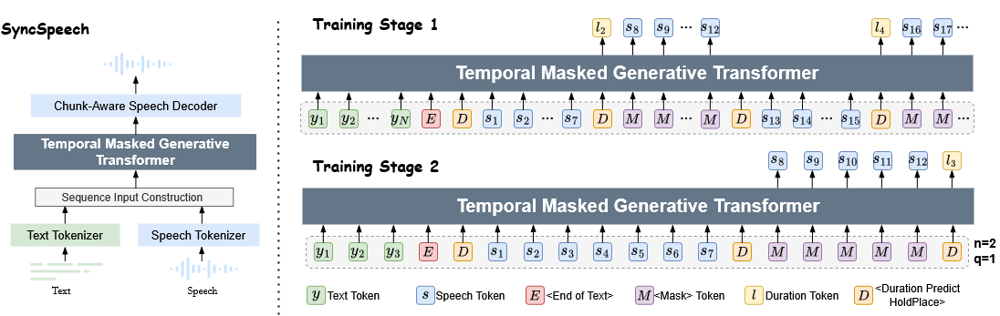

SyncSpeech: Low-Latency and Efficient Dual-Stream Text-to-Speech based on Temporal Masked Transformer
[Paper] [Code]
Anonymous authors
Abstract: This paper presents a dual-stream text-to-speech (TTS) model, SyncSpeech, capable of receiving streaming text input from upstream models while simultaneously generating streaming speech, facilitating seamless interaction with large language models. SyncSpeech has the following advantages: Low latency, as it begins generating streaming speech upon receiving the second text token; High efficiency, as it decodes all speech tokens corresponding to the each arrived text token in one step. To achieve this, we propose a temporal masked transformer as the backbone of SyncSpeech, combined with token-level duration prediction to predict speech tokens and the duration for the next step. Additionally, we design a two-stage training strategy to improve training efficiency and the quality of generated speech. We evaluated the SyncSpeech on both English and Mandarin datasets. Compared to the recent dual-stream TTS models, SyncSpeech significantly reduces the first packet delay of speech tokens and accelerates the real-time factor. Moreover, with the same data scale, SyncSpeech achieves performance comparable to that of traditional autoregressive-based TTS models in terms of both speech quality and robustness.

LibriSpeech Test Clean
| Text | Speaker Prompt | CosyVoice | CosyVoice2 | SyncSpeech |
|---|---|---|---|---|
| I will show you what a good job I did," and she went to a tall cupboard and threw open the doors. | ||||
| Costly entertainments, such as the potlatch or the ball, are peculiarly adapted to serve this end. | ||||
| Whoever, therefore, is ambitious of distinction in this way ought to be prepared for disappointment. | ||||
| To relieve her from both, he laid his hand with force upon his heart, and said, "Do you believe me?" | ||||
| Patsy and Beth supported their cousin loyally and assisted in the preparations. | ||||
| Her manner was neither independent nor assertive, but rather one of well bred composure and calm reliance. | ||||
| "Yes; the character which your royal highness assumed is in perfect harmony with your own." | ||||
| The military force, partly rabble, partly organized, had meanwhile moved into the town." |
Seed test-zh
| Text | Speaker Prompt | CosyVoice | CosyVoice2 | SyncSpeech |
|---|---|---|---|---|
| 将对于三位正能量卫士，授予地铁正能量荣誉证书，和上海地铁志愿者卡。 | ||||
| 六月金融机构新增外汇，各项贷款一百二十六亿美元。 | ||||
| 赖佩霞，为什么会选择这个相对冷门的治疗领域。 | ||||
| 此前奥巴马在此账号上发表过的所有推文，均被抹掉。 | ||||
| 为什么这么多的人能在网上，各取所需不产生混乱呢。 | ||||
| 北京在出行模式，城市影响力方面表现优异。 |
Seed test-hard
| Text | Speaker Prompt | CosyVoice | CosyVoice2 | SyncSpeech |
|---|---|---|---|---|
| 白鸡装白罐白鸡爱吃白米饭，白鸡爱下白鸡蛋。白手捡起白鸡蛋，白蛋装满小白罐。 | ||||
| 如果做不到你的是你的我的是我的，就做不到你的是我的，我的是你的，结果就有可能是我的是我的，你的还是我的。 |